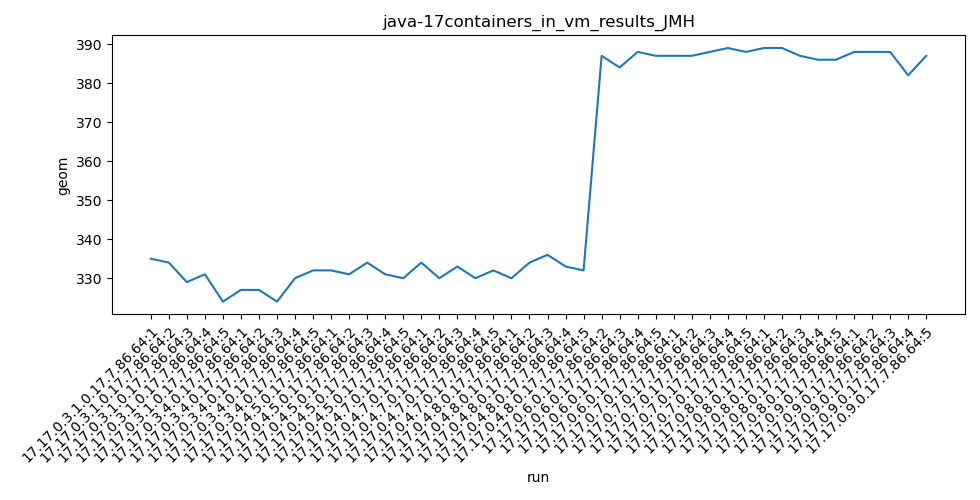

java-17 JMH
Context at bottom
/home/jvanek/git/benchmarks-in-nested-virtualisation-toolchain/final_results/containers_in_vm_results/containers_in_vm_results_JMH
java-17
JMH
containers_in_vm_results_JMH
final score
Expected number of java-17 JDKs: 9
1st avgmed_alljdks_metric:
/home/jvanek/git/benchmarks-in-nested-virtualisation-toolchain/final_results/result_processing.py /home/jvanek/git/benchmarks-in-nested-virtualisation-toolchain/final_results/containers_in_vm_results/containers_in_vm_results_JMH geom False
values: [335, 334, 329, 331, 324, 327, 327, 324, 330, 332, 332, 331, 334, 331, 330, 334, 330, 333, 330, 332, 330, 334, 336, 333, 332, 387, 384, 388, 387, 387, 387, 388, 389, 388, 389, 389, 387, 386, 386, 388, 388, 388, 382, 387]

Expected number of iterations: 5
final number of values: 44 out of 45
Pass rate: 97.8%
values: (324, 389, 355.22727272727275, 334)

** accuracy from all jdks and runs
more is better
MIN: 324
MAX: 389
AVG: 355.22727272727275
MED: 334
Relative differences 1:
MIN-MAX: 17.0 %
MIN-AVG: 9.0 %
MIN-MED: 3.0 %
MAX-MIN: -20.0 %
MAX-AVG: -10.0 %
MAX-MED: -16.0 %
AVG-MED: -6.0 %
stored to java-17.properties. sort | uniq that!
2nd avgmed_by_jdk_metric:
values: [330.6, 328.0, 331.6, 331.8, 333.0, 386.5, 387.8, 387.4, 386.6]

values: [331, 327, 331, 332, 333, 387, 388, 387, 388]

values: (328.0, 387.8, 355.9222222222222, 333.0)
values: (327, 388, 356.0, 333)

** accuracy from all jdks where runs were avged
more is better
MIN: 328.0
MAX: 387.8
AVG: 355.9222222222222
MED: 333.0
Relative differences 1:
MIN-MAX: 15.0 %
MIN-AVG: 8.0 %
MIN-MED: 2.0 %
MAX-MIN: -18.0 %
MAX-AVG: -9.0 %
MAX-MED: -16.0 %
AVG-MED: -7.0 %
stored to java-17.properties. sort | uniq that!
** accuracy from all jdks where runs were medianed
more is better
MIN: 327
MAX: 388
AVG: 356.0
MED: 333
Relative differences 1:
MIN-MAX: 16.0 %
MIN-AVG: 8.0 %
MIN-MED: 2.0 %
MAX-MIN: -19.0 %
MAX-AVG: -9.0 %
MAX-MED: -17.0 %
AVG-MED: -7.0 %
stored to java-17.properties. sort | uniq that!
/home/jvanek/git/benchmarks-in-nested-virtualisation-toolchain/final_results/containers_in_vm_results/containers_in_vm_results_J2DBENCH
java-17
JMH
/home/jvanek/git/benchmarks-in-nested-virtualisation-toolchain/final_results/containers_in_vm_results/containers_in_vm_results_RADARGUNs3
java-17
JMH
/home/jvanek/git/benchmarks-in-nested-virtualisation-toolchain/final_results/containers_in_vm_results/containers_in_vm_results_SPECJBB
java-17
JMH
/home/jvanek/git/benchmarks-in-nested-virtualisation-toolchain/final_results/containers_in_vm_results/containers_in_vm_results_RADARGUNs1
java-17
JMH
/home/jvanek/git/benchmarks-in-nested-virtualisation-toolchain/final_results/containers_in_vm_results/containers_in_vm_results_DACAPO
java-17
JMH
pass rates:
containers_in_vm_results_JMH=97.8%
Context:
- containers_in_vm_results
- JMH